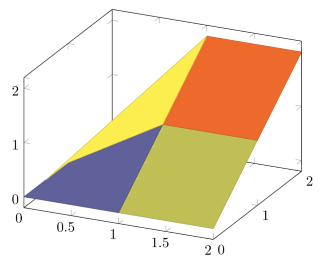

\usepackage{tikz}
\usepackage{pgfplot}
before starting the document.
Drawing 3D graph with LATEX
Latex is not limited at two dimension functions, it can also draw
three dimentional representation of functions with three variable. For this type
of graph we still need the same packages as 2D graph, so add:
Basic 3D graph.
Exactly like 2D graph, we need first to create the environment for plotting
graphs, for that we write:
 We can change even the color, add in the option [colormap/cool]:
We can change even the color, add in the option [colormap/cool]:
 After the option colormap/ we can use other predefine extension, here are other possible
parts: hot, hot2, jet, blackwhite, bluered, greenyellow, redyellow, violet.
After the option colormap/ we can use other predefine extension, here are other possible
parts: hot, hot2, jet, blackwhite, bluered, greenyellow, redyellow, violet.
\begin{tikzpicture}
\begin{axis}[option of the axis]
...
\end{axis}
\end{tikzpicture}
Now we can insert our function in the environment. There is a small difference between the 2D
plot and 3D: for the 3 dimension the code is: \addplot3[surf,]{function}; Here is an exemple:
\begin{tikzpicture}
\begin{axis}
\addplot3[surf,]{x^2+y^2};
\end{axis}
\end{tikzpicture}
The result is:
There is also the possibility to draw the function as a grid instead of a surface, change
[surf,] to [mesh,]:
\begin{tikzpicture}
\begin{axis}
\addplot3[mash,]{x+10*y};
\end{axis}
\end{tikzpicture}
The result is:
We can change even the color, add in the option [colormap/cool]:
\begin{tikzpicture}
\begin{axis}
\addplot3[surf, colormap/cool]{x*y};
\end{axis}
\end{tikzpicture}
The result is:
After the option colormap/ we can use other predefine extension, here are other possible
parts: hot, hot2, jet, blackwhite, bluered, greenyellow, redyellow, violet.
Surface from coordinates.
Latex can plot 3D graph not just from function, but also from coordinates
to create a surface. Here is an example:
\begin{tikzpicture}
\begin{axis}
\addplot3[surf,]
coordinates {
(0,0,0) (0,1,0) (0,0.5,0)
(1,0,0) (1,1,1) (1,2,2)
(2,0,0) (2,1,1) (2,2,2)};
\end{axis}
\end{tikzpicture}
This is the result:

Exercice.
Now try to display the function: f(x,y)=x+y^3 for the solution move the mouse over the black box on the right
\begin{tikzpicture}
\begin{axis}
\addplot3[surf,]{x+y^3};
\end{axis}
\end{tikzpicture}